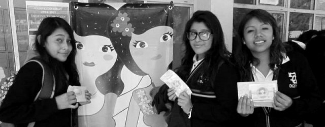

La Dirección General de Educación Tecnológica Industrial es una dependencia adscrita a la Subsecretaría de Educación Media Superior (SEMS), dependiente de la Secretaría de Educación Pública que ofrece el servicio educativo del nivel medio superior tecnológico. El 16 de Abril de 1971 es publicado en el Diario Oficial de la Federación el acuerdo presidencial por el que se modifica la estructura orgánica administrativa de la SEP y se da paso a la creación de la DGETI, en agosto de ese mismo año se publican las funciones que tendrá esta institución y se integran a ella los centros de capacitación para el trabajo industrial, escuelas tecnológicas industriales, los centros de estudios tecnológicos en el Distrito Federal y los centros de estudios tecnológicos foráneos.
Actualmente la DGETI es la institución de educación media superior tecnológica más grande del país, con una infraestructura física de 442 planteles educativos a nivel nacional, de los cuales 168 son CETIS y 274 CBTIS; ha promovido además la creación de al menos 288 CECyTEs, mismos que operan bajo un sistema descentralizado. Tiene por objetivo formar bachilleres técnicos y técnicos profesionales que desarrollen, fortalezcan y preserven una cultura tecnológica y una infraestructura industrial y de servicios que coadyuven a satisfacer las necesidades económicas y sociales del país. Misión Formar ciudadanos con las habilidades, conocimientos y actitudes requeridas para propiciar y participar en una sociedad del conocimiento, tanto en el ámbito laboral como social. Lo anterior en un contexto de equidad, flexibilidad, integralidad y apertura, que coadyuve a satisfacer las necesidades sociales y económicas del país. Visión Ser una institución que proporcione formación integral y pertinente de acuerdo a las exigencias derivadas de la competitividad mundial, del entorno y vocación local, además de tener la flexibilidad para satisfacer los intereses, aspiraciones y posibilidades de la población que demanda este nivel educativo en nuestros diferentes planteles.
El significado o mensaje de la composición implica códigos denotativos y connotativos. Los primeros saltan a la vista: DGETI. En cuanto a los segundos, se hace la representación de dos serpientes emplumadas superpuestas en forma helicoidal o encontrada, la primera de las cuales (Quetzalcóatl, entre los Toltecas) se desplaza del centro hacia la parte superior y, la segunda (Kukulkán, para los Mayas), del centro hacia abajo. Esta bideidad con sus 32 plumas-engranes, simboliza el acervo científico y tecnológico de nuestros antepasados precortesianos, distribuido en lo que hoy es México, así como sus entidades federativas vigentes, recipendarias de nuestros 441 centros de estudio dependientes. Finalmente, cabe enfatizar que las cabezas de las serpientes representan nuestras penínsulas con las que, geográficamente, queda conformada de manera estilizada la República Mexicana.
C.B.T.i.s. es el acrónimo de Centro de Bachillerato Tecnológico Industrial y de Servicios, establecido en México, a través de la Dirección General de Educación Tecnologica Industrial (DGETI); y la Subsecretaría de Educación Media Superior (SEMS). Ofrece la modalidad de Bachillerato Tecnológico, DGETI es el subsistema de educación Media superior más grande de México.|CE
Formar personas con conocimientos tecnológicos en las áreas industrial, comercial y de servicios, a través de la preparación de profesionales técnicos y bachilleres, con el fin de contribuir al desarrollo sustentable del país.
Ser una institución que proporcione una formación integral y pertinente de acuerdo a las exigencias derivadas de la competitividad mundial y el entorno y vocación local, además de tener la flexibilidad para satisfacer los intereses, aspiraciones y posibilidades de la población que demanda este nivel educativo en nuestro plantel.
Incorporarse al campo laboral tanto en el sector público como en el privado.
Desempeñarse de manera independiente presentando sus servicios profesionales.
Responder a un imperativo de desarrollo Municipal, Regional y Nacional.
El CAED es un Centro de Atención para Estudiantes con Discapacidades que tienen por objetivo, brindar asesorías personalizadas a alumnos que presentan algún tipo de discapacidad (intelectual, motriz, visual o auditiva),para que inicien o terminen el bachillerato en modalidad no escolarizada y con ello tengan la posibilidad de ingresar a un nivel educztivo más alto o integrarse a un área productiva.
Nombre: María Fernanda Salazar Sánchez
Grado: 4to "E"
Especialidad: Programación
Submodulo: Desarrolla Aplicaciones Móviles
La carrera de Técnico en logística ofrece las competencias profesionales que permiten al estudiante realizar actividades dirigidas a la administración de bienes, planificando los suministros destinados al almacenamiento de manera manual y electrónica, la organización de los nodos logísticos para el transporte de mercancías así como, proveer los servicios y atención al cliente sobre los movimientos y los costos de la cadena logística.
El aspirante deberá ser competente con una actitud de observación, creatividad, trabajo en equipo y cuestionarse acerca de los fenómenos físicos.
Su estructura curricular se divide en asignaturas de componentes básico y perpedéutico.
En capacitación profesional las asignaturas que se cursan son: Taladro y Torno, Electricidad y Control, Soldadura Electrica y Autógena, Rectificadora, Resistencia de Materiales, Control Numérico, Computarizado y Circuitos Hidráulicos.
El egresado adquirirá la formación profesional mediante la cual desarrollará aptitudes y habilidades, logrando la automatización y mantenimiento de diferentes sistemas y procesos lo cual le permitirá ser competitivo y tener un buen desempeño en el campo laboral, desarrollando las competencias profesionales siguientes:
Desarrollar profesionales técnicos en programación que articulen saberes de diversos campos y realizaractividades dirigidas a la instalación y desarrollo de software de aplicación utilizando programación estructurada y orientada a objetos en ambientes web y móviles, con almacenamiento persistente de datos.
Configuración y administración de plataforma e-learning y Comercio electrónico.
El técnico en programación desarrollará las siguientes competencias profesionales:
Durante el proceso de formación de los cinco módulos, el estudiante desarrollará o reforzará las siguientes competencias profesionales, correspondientes al Técnico en electricidad.